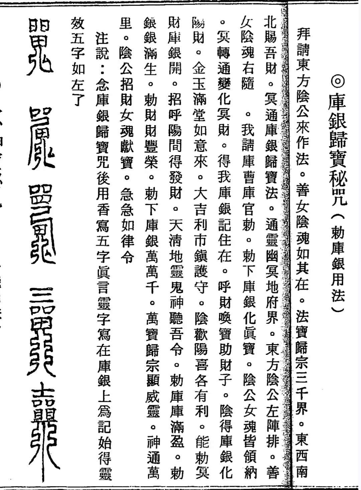
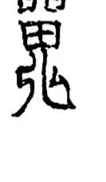
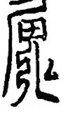
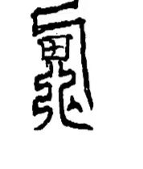
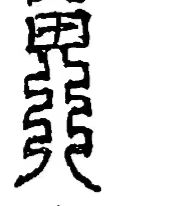

20251127真法师都尽量不碰阴类 关于《霸家修阴法》
符咒术法道家 原始对话记录
欢欢这个不能用
瘆得慌
阴公招财，女魂献宝
念了一遍，头皮发麻
符咒里
这个




这个是不是无头无脚
真法师都尽量不碰阴类
你把他们请来干啥
要学正统的东西
别乱学乱看
尤其是道法，有的真的很邪
夭贫孤
越学越邪
以下为编者整理的主题文章
编者整理 · 主题文章
为什么真法师都尽量不碰"阴类"？——术法路上的取舍与警醒
一句话结论：传承记录里有一条明确告诫：真法师都尽量不碰阴类。所谓"阴公招财、女魂献宝"一类术法，念一遍就"头皮发麻"；行内讲究学正统、别乱学乱看——否则"越学越邪"，甚至落入"夭、贫、孤"的下场。
一、一句话说清这条告诫
在传承记录里，有一条反复强调的行内底线：
"真法师都尽量不碰阴类。"
所谓"阴类"，指的是一类召请阴灵、以阴气作法的术法（如某些"霸家修阴法"一类的招财、献宝之法）。记录中的态度非常鲜明——不碰，不用，不学。
二、这类术法长什么样
记录中举了例子：某类符咒写着"阴公招财，女魂献宝"之类的话，还有据称"无头无脚"的形象。作者的反应是：
"欢欢这个不能用，瘆得慌。" "念了一遍，头皮发麻。" "你把他们请来干啥？"
也就是说，这类术法在观感上就令人不适，行内人本能地会回避。
三、为什么"不碰"
- 来路不正：正统道法讲究"清正、光明"，阴类术法则以阴灵、阴气为媒介，属旁门。
- 反噬风险：民间有"夭、贫、孤"之说——指行邪术者往往落得短命、贫穷、孤独的下场。
- 越走越偏：记录直言"有的真的很邪"，"越学越邪"。
四、正确做法：学正统，别乱看
传承给出的方法是：
"要学正统的东西，别乱学乱看。"
- 源头要正：跟正经传承、正经老师；
- 内容要筛：不猎奇、不贪"快见效"的邪门法术；
- 少得多惑：正如另一篇记录所说，"少得多惑"——学得杂不如学得精。
五、与"正统道法"的对照
正统道法的标志（见相关记录）是手印、符、咒三者结合，指向的是护身、安神、济人。判断一门术法是否"正统"，可看它：
| 正统 | 阴类／旁门 |
|---|---|
| 手印＋符＋咒三合一，光明正大 | 召请阴灵、以阴气作法 |
| 用于护身、安神、济人 | 强调"招财、献宝"等速成诱惑 |
| 令身心安稳 | 令人"头皮发麻"、观感不适 |
| 传承正、有师承 | 来路不明、旁门左道 |
六、提醒
- 本站所整理内容，一律按传统文化研究看待；
- 对任何"召请阴灵、求速效"的术法，一律不建议尝试；
- 学传统文化，取其修身养性、去其怪力乱神——这才是"正统"的态度；
- 有病请就医，有事请依法依规，切勿寄望于旁门左道。
说明与免责：本站为民间修炼、民俗文化与传统文化资料的整理与记录，内容源自传承者口传与个人修习体会，仅供文化交流与研究参考，不构成医疗、健康、投资或任何功效承诺。所述内容属传统术数范畴，请理性看待；如身体不适，请及时就医。请遵守法律法规与公序良俗。